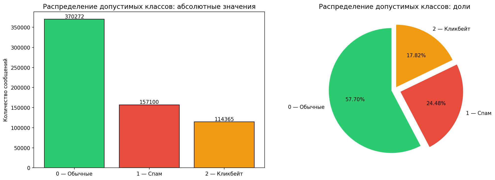
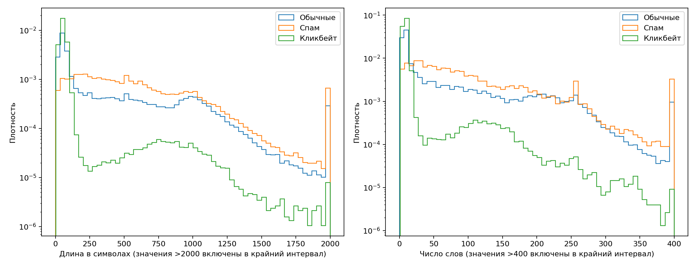

Кейс: «Классификация спама и кликбейта: распознавание спам-сообщений и кликбейт-заголовков».
Команда: «Великолепная четверка».
Датасет: Datasets/df.csv.
По заданию из необходимо разработать Telegram-бота, классифицирующие входящие голосовые сообщения в три категории: обычное сообщение, спам и кликбейт. Предусмотрено использование TTS для создания синтетического аудио на основе текстовых примеров.
Датасет df.csv представляет собой один объединённый файл, состоящий из 2 столбцов (текст, метка). Количество уникальных меток: 3 (0 - нормальный текст, 1 - спам, 2 - кликбейт). Он собран из восьми отдельных датасетов Kaggle (отдельные датасеты по кликбейту, отдельные по спаму), большинство из которых были англоязычными, и переведёны на русский язык. Представленный скрипт TranslateScript.py использует модель Helsinki-NLP/opus-mt-en-ru, пакетную обработку по 32 текста, ограничение входа и генерации до 512 токенов и поиск с четырьмя лучами (num_beams=4). Скрипт сохраняет исходный текст, перевод и метку, однако в итоговом df.csv оставлены только текст и целевая категория (метка).
Файл включает 643 010 записи , включая заголовок. Размер файла — 381,59 МБ .
| Поле | Тип после восстановления | Назначение |
|---|---|---|
text |
строка (object в pandas) |
Текст сообщения, заголовка либо более длинного материала; в основном русский перевод |
is_spam1_or_clickbait2 |
целое число (int64) |
Целевая категория: 0 — обычное сообщение; 1 — спам; 2 — кликбейт |
CSV-файл датасета неоднороден: 638 540 восстановленных записей используют запятую перед меткой, 3 198 — точку с запятой. Стандартный pd.read_csv завершается ошибкой разбора около строки 66 123. Для первичного анализа применено явное восстановление: из каждой физической строки извлекается целочисленная метка после последнего подходящего разделителя , или ;; парные внешние кавычки снимаются, удвоенные CSV-кавычки декодируются. Многострочные записи автоматически не склеиваются, отсутствующие категории не угадываются.
| Структура записей датасета | Количество |
|---|---|
| Восстановленные пары «текст — целочисленная метка» | 641 738 |
| Повторные заголовки внутри файла | 4 |
| Строки без целочисленной метки | 1 266 |
| Пустые физические строки | 1 |
Записи с меткой вне категорий 0/1/2 |
1 |
| Записи с допустимой целевой меткой | 641 737 |
Таким образом, 1 270 непустых строк не включены в восстановленную таблицу и ещё одна запись не соответствует таксономии проекта. Это число относится к физическим строкам, а не к доказанному количеству утраченных исходных сообщений: повреждённые фрагменты могут быть частями записей.
Восстановленная таблица имеет форму 641 738 × 2. Пропуски NaN в её столбцах не обнаружены, однако имеются два пустых текста. Отсутствие NaN не означает отсутствия повреждений в исходном CSV.
Доли ниже вычислены по 641 737 записям с допустимыми метками, до удаления повторов и конфликтов.
| Класс | Количество | Доля | Уникальные пары «текст — метка» |
|---|---|---|---|
0 — обычные сообщения |
370 272 | 57,70% | 278 574 |
1 — спам |
157 100 | 24,48% | 107 453 |
2 — кликбейт |
114 365 | 17,82% | 70 589 |
| Всего | 641 737 | 100% | 456 616 |
Соотношение наибольшего и наименьшего классов составляет 3,24 : 1. Присутствует дисбаланс в пользу обычных сообщений, но кликбейт не является экстремально редким классом.
Средняя длина восстановленного текста составляет 370,71 символа, медиана — 113, 95-й процентиль — 1 181, максимум — 5 718 символов. По числу фрагментов, разделённых пробелами, среднее составляет 65,44, медиана — 17, 95-й процентиль — 250, максимум — 1 380. Здесь «слово» — технический подсчёт непустых последовательностей, а не лингвистическая токенизация.
| Класс | Средняя длина, символы | Медиана, символы | Медиана, слова |
|---|---|---|---|
| Обычные сообщения | 360,94 | 94 | 14 |
| Спам | 601,50 | 486 | 76 |
| Кликбейт | 85,34 | 56 | 9 |
Кликбейт преимущественно представлен короткими заголовками, спам — более длинными сообщениями. Это полезная характеристика корпуса, но также возможный источник смещения: модель может опираться на длину и особенности источника вместо содержания. Нужна отдельная оценка короткого спама, длинного кликбейта и обычных заголовков.
Графики: eda/class_distribution.png и eda/text_lengths.png.


Во всей восстановленной таблице обнаружено 185 121 полный дубликат сверх первого экземпляра, или 28,85% записей. После удаления полных повторов остаётся 456 617 уникальных пар, включая запись с ошибочной меткой. После исключения этой записи — 456 616 пар.
Среди записей с допустимыми категориями 524 одинаковых текста имеют разные метки; эти группы содержат 5 289 строк, или 1 059 уникальных пар «текст — метка». Например, материал, начинающийся с «Кто должен заменить Бейонсе в #Coachella? Голосовать!», встречается с категориями 0 и 2. При приведении регистра, пробелов и ё/е число конфликтующих групп увеличивается до 527, число входящих в них строк — до 5 300. Это прямой признак несогласованности разметки, но не количественная оценка всех её ошибок.
Запись «Стоимость запасов была более 69 млрд. долл.» на физической строке 365 055 имеет метку 2000. Она находится внутри повреждённого фрагмента, где вместо целевых меток встречается исходный английский текст. Это не четвёртый класс проекта; запись отправляется на проверку без автоматического назначения категории.
Автоматически выявлены следующие признаки; они могут пересекаться и не всегда означают ошибку:
| Признак | Записей | Доля восстановленной таблицы |
|---|---|---|
| Не содержат кириллицы | 19 606 | 3,06% |
| Содержат латинские буквы | 275 798 | 42,98% |
Содержат http://, https:// или www. |
19 797 | 3,08% |
| Содержат HTML-теги или HTML-сущности | 15 943 | 2,48% |
| Короче 10 символов | 1 760 | 0,27% |
| Длиннее 2 000 символов | 6 869 | 1,07% |
| Содержат более 512 слов по пробельному подсчёту | 2 555 | 0,40% |
Содержат символ замены � |
3 | менее 0,01% |
Отсутствие кириллицы не доказывает, что текст англоязычный: встречаются последовательности пунктуации и других символов. Латиница может отражать имена, адреса, сокращения, непереведённые части или ошибки. Среди наиболее частых текстов есть длинные последовательности точек и звёздочек; фраза «Я не знаю, что делать.» встречается 116 раз. В отдельных просмотренных записях наблюдаются неестественные словосочетания и повторяющиеся служебные слова. Требуется ручная проверка, насколько перевод сохраняет рекламный, мошеннический либо привлекающий внимание смысл исходника.
Ограничение перевода до 512 токенов создаёт риск усечения длинных примеров. Число слов не равно числу токенов модели, поэтому 2 555 длинных текстов — ориентир для проверки, а не число доказанных усечений.
Точность разметки, долю семантических ошибок перевод по представленным данным установить нельзя.
Датасет имеет достаточный объём и примеры всех трёх целевых категорий для построения и сравнения первоначальных текстовых моделей, например TF-IDF с логистической регрессией. После очистки и проверки меток тексты также могут использоваться для TTS-синтеза тренировочного аудио.
Применимость ограничена неоднородностью источников, машинным переводом, большим количеством повторов, конфликтующими метками и различиями жанров. Корпус содержит заголовки, бытовые сообщения, письма и длинные материалы; он не является подтверждённой репрезентативной выборкой русскоязычных голосовых сообщений Telegram. Показатели на случайном текстовом тесте нельзя напрямую переносить на реальные аудиосообщения.
До обучения необходимо исключить неизвестные категории и пустые тексты, устранить повторы, вынести конфликты на проверку и разделить данные так, чтобы варианты одного текста не попадали одновременно в обучение и тест.
Проверочный запуск подготовки данных оставил 442 780 примеров: 271 916 обычных сообщений, 104 994 спам-сообщения и 65 870 примеров кликбейта. Это результат конкретной консервативной очистки для базовой модели, а не новая ручная разметка. Стратифицированное разделение 80/20 создало 354 224 обучающих и 88 556 тестовых примеров; совпадающих очищенных текстов между ними — 0.
Для надёжной оценки требуется восстановить сведения об источниках и организовать тестирование по источникам или группам близких текстов. Основные метрики — macro F1, precision/recall/F1 каждого класса и матрица ошибок; weighted F1 и accuracy используются дополнительно. Исключение точных совпадений не устраняет утечку парафразов, общих шаблонов и повторов из разных источников.
Для аудиосценария необходимо сформировать независимый тест реальных голосовых сообщений, проверить распознавание речи (ASR) и итоговую классификацию. TTS-версии одного текста, включая разные голоса, должны оставаться в одной части выборки. Синтетическая речь расширяет тренировочные примеры, но сама по себе не подтверждает устойчивость к шуму, разговорной речи и ошибкам распознавания.
Заключение: df.csv пригоден как исходный учебный датасет для экспериментов с трёхклассовой текстовой классификацией и последующим синтезом аудио. Использовать его как готовую качественно размеченную обучающую выборку без очистки и аудита нельзя. Главные выявленные проблемы — неоднородный формат CSV, около 28,85% повторных записей, конфликтующие метки и неоднородное качество переводов. Применимость к реальным голосовым сообщениям должна быть подтверждена отдельной оценкой.